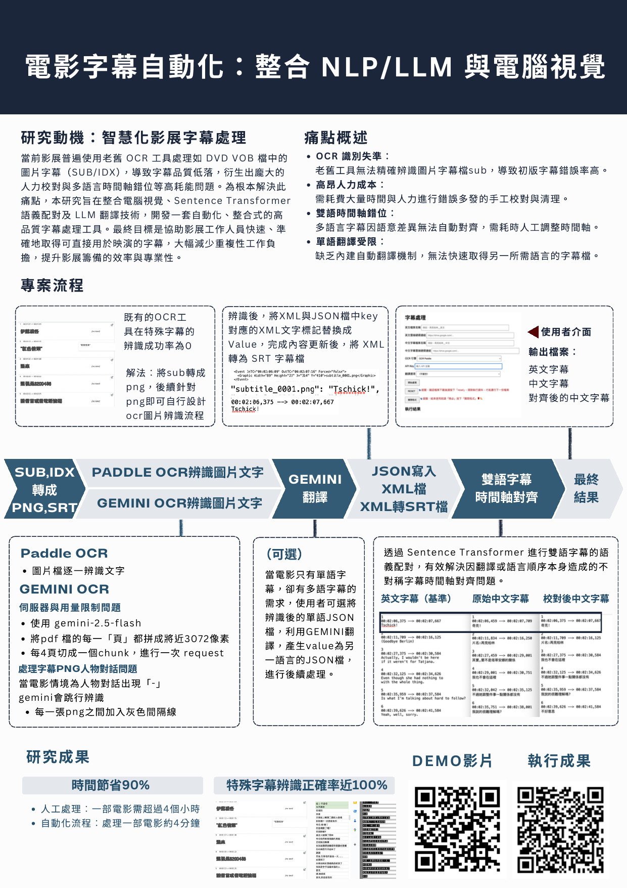
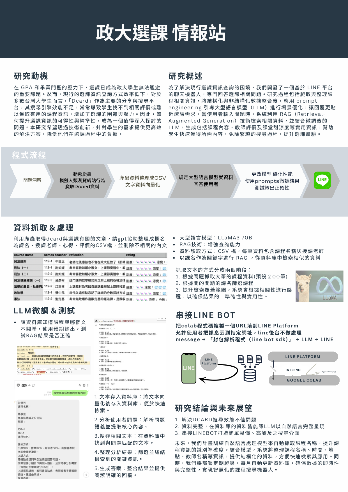
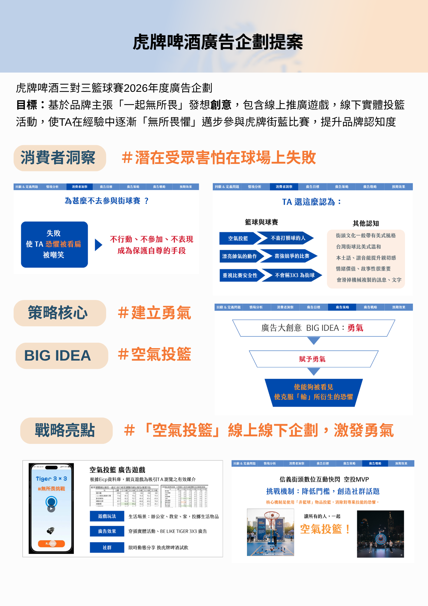
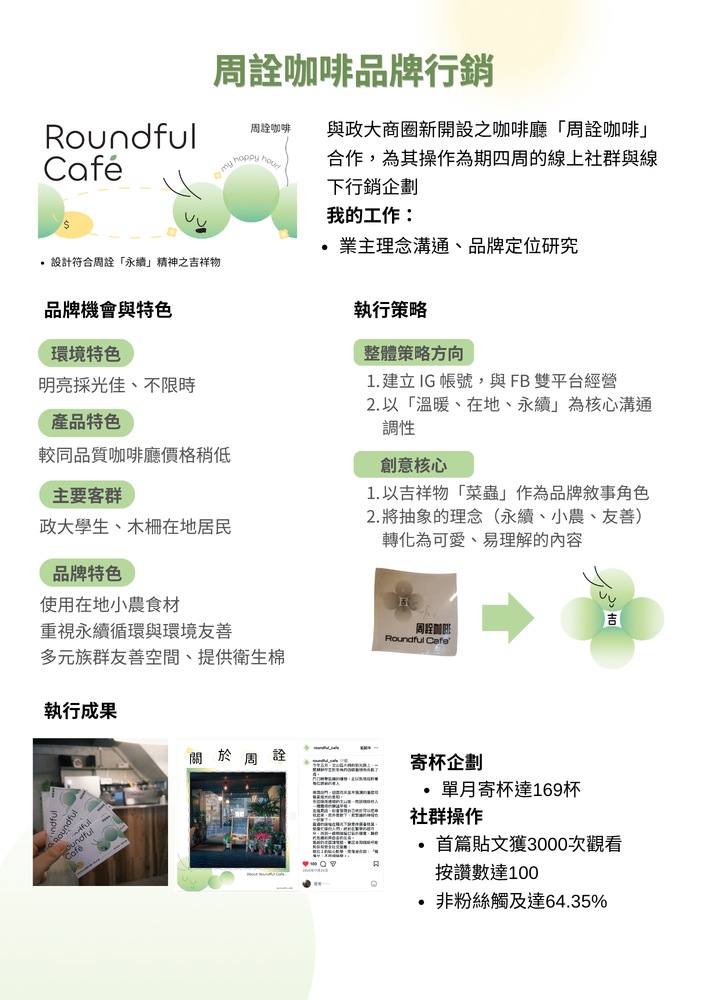
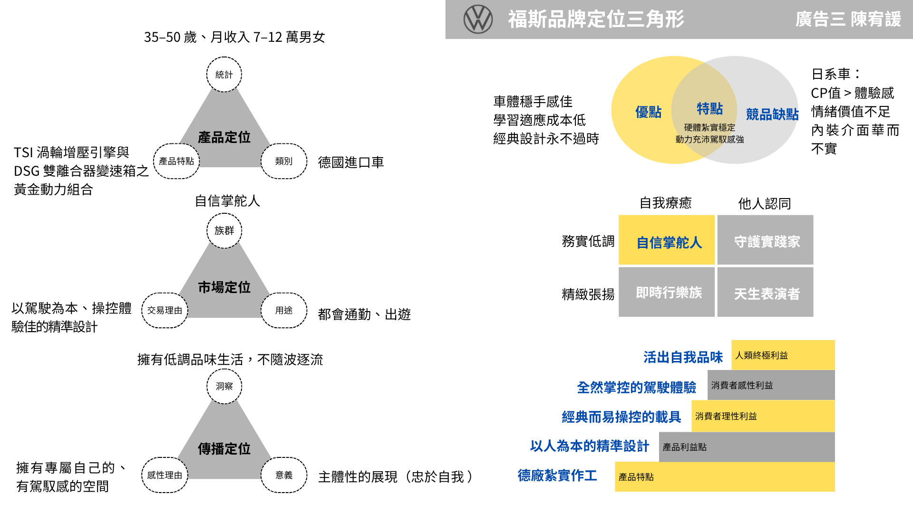

PROJECTS / EXPERIENCE
廣告策略與數據
虎牌啤酒廣告提案：負責基於策略發想創意，全系計畫書競賽第一名。
台北市創業提案競賽：負責創意發想及上台簡報，獲得優勝。
AI、程式創新與實作
電影字幕處理自動化：使用RAG技術、LLM串接，提升課程查詢方便性，於政大 Innofest AI 聯展獲得第一名。
選課情報站：程式串接 Gemini API，字幕翻譯校對流程自動化提升作業效率。
網頁遊戲撰寫開發：於三知餘文化實習，設計互動式文本遊戲劇本、基於TWINE遊戲引擎的網頁遊戲程式撰寫。
專案領導與組織
政大學生會社團部部長／政大社團博覽會總召：擔任學校行政與百餘社團之溝通橋樑，每學期吸引120＋社團參與展覽，增加線下觸及提升社團參與率。
團隊合作與社會參與
政大麥高芬劇團實習：擔任組員，與團隊共同完成兩次公演，熟悉舞台劇、音樂劇。
數位學伴計畫：線上陪伴、教導偏鄉孩童，以運用數位教材獲得多元教學獎。
OTHER ACHIEVEMENTS
112學年度 上下學期 書卷獎
自傳
我是陳宥諼，目前就讀於政治大學，我是一個膽大心細、不畏失敗的人，在求學過程中熱愛面對挑戰，對於跨出舒適圈十分樂在其中，亦追求在各領域的成效，舉例而言，高中擔任攝影社社長時，使社員人數成長三倍；在大學中跨領域雙主修人工智慧應用學位，亦投身學生會、劇團、電影節等不同領域之組織，在裡面廣泛學習、充分發揮，我認為勇往直前的特質讓我擁有較強的韌性，無論是面對壓力或是新事物都能穩定的前行。
廣告系是我的本科系，在傳播學院的求學過程中，我擁有相當亮眼的學業成績，對於傳播理論與實踐都非常有興趣，我不斷嘗試將課堂所學應用於實務中，如在劇團擔任宣傳組，運用設計廣告遊戲，在索票第一週售罄票券；在學生會中協調複雜利害關係提升溝通能力，這些經驗都磨練了我敏銳的社會觀察力。對我而言，廣告系所學不僅是資訊的傳遞，更是解決問題的工具，我享受從零到一建構策略的過程，和運用創意解決問題的快感，因此努力往廣告人的路途邁進。
此外，我也將人工智慧專長應用於我觀察到的日常現象，如政大課程評價查詢困難，就使用RAG技術串接LINE BOT，打造個人化查詢系統；在電影節時發現字幕處理技術仍大量耗費人力時間，便使用電腦視覺串連 GEMINI API 打造字幕翻譯校正自動化工具，亦喜歡撰寫數位文本遊戲，我認為傳播背景使我較理工學生擁有更精準的社會洞察能力，而精熟的程式能力使我能帶著洞察走到更遠的地方。
我具備廣告人的敏銳洞察與敘事能力，更擁有將AI技術轉化的實作經驗，對於日新月異的AI技術感到興奮，我渴望帶著這份對技術的熱忱與跨領域的韌性，協助團隊產出具備商業價值的內容洞察，並在變動的趨勢中穩定前行。
作品集
Selected works · 2022 — 2025

電影字幕自動化
整合 NLP / LLM 與電腦視覺的字幕處理工具
處理 DVD VOB 檔中的圖片字幕（SUB/IDX），結合 PaddleOCR、Sentence Transformer 與 Gemini API，打造高精度多語字幕對齊工具。於政大 Innofest AI 聯展獲得第一名。

政大選課情報站
基於 LINE 平台的 AI 選課查詢機器人
應用 RAG 技術 + LLaMA3 70B，從 Dcard 與選課文章中動態爬取並精準檢索課程評價。使用 RAG 增強查詢能力，結合 prompt engineering 優化回覆品質，解決政大學生選課資訊查詢困難。
Text Game 前往作品 ↗
汪汪隊立大功——台南日治歷史遊戲
三知餘文化公司實習作品
以日治時期台南女中為背景的文字解謎遊戲，基於 HTML/CSS/JS 開發。負責故事架構發想、文字編寫、前端程式撰寫及 AI 圖像生成。
Text Game 前往作品 ↗
政大麥高芬劇團《可寵》宣傳遊戲
擔任劇團宣傳時獨立開發
一人獨立開發之互動解謎遊戲，作為劇團公演《可寵》的宣傳媒介。負責手繪圖片、解謎機關設定、故事架構發想、文字編寫、前端程式撰寫及 AI 文字生成。
Interactive E-Book 前往作品 ↗
AI 兒童數位互動繪本
為弱勢學童辦理 AI 園遊會
AI 協作之數位互動繪本，設計學習主題，利用 AI 生成文案、圖片、音樂，並完成前端程式撰寫。提供偏鄉學童互動式閱讀體驗。
Text Game 前往作品 ↗
福安坑溪復育計畫——故事地圖
台南在地河流互動地圖
福安坑溪曾為舊台南市區重要河流，近年展開復育計畫。本作品以互動式地圖方式，呈現福安坑溪流經地及歷史，希望喚起居民與河流之間的距離。

虎牌啤酒廣告企劃提案
虎牌啤酒三對三籃球賽 2026 年度廣告企劃
基於「一起無所畏」之品牌主張發想創意，包含線上推廣遊戲（空氣投籃）、線下實體投籃活動，使 TA 在經驗中逐漸「無所畏懼」邁步參與虎牌街藍比賽，提升品牌認知度。

周詮咖啡 品牌行銷
與政大商圈咖啡廳合作，四週線上社群與線下行銷企劃
業主理念溝通、品牌定位研究、設計符合周詮「永續」精神之吉祥物，操作四週社群內容與線下寄杯企劃。

福斯汽車 品牌定位三角形
福斯汽車
以田字型特點+利益階梯，分析福斯汽車之產品定位/市場定位/傳播定位